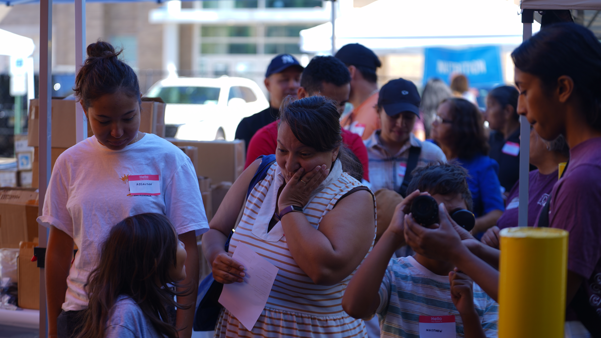

Kids Ministry
A vibrant, age-appropriate environment where children from nursery through 5th grade encounter God through creative worship, Bible stories, and safe community every Sunday morning.

Youth Ministry
A dynamic community for middle and high schoolers to encounter God, build deep friendships, and discover their God-given identity and calling in a safe, fun, Spirit-filled space.

Young Adults
For those in their 20s and 30s navigating career, relationships, and purpose — this ministry creates space for honest conversations, authentic faith, and meaningful community.

Women's Ministry
A Christ-centered community where women of all ages find encouragement, deep friendship, and spiritual growth through Bible studies, prayer circles, and sisterhood events throughout the year.

Men's Ministry
Building men of God — husbands, fathers, and leaders — through fellowship, accountability, and teaching that equips men to lead with integrity in every area of life.

Worship Ministry
Our worship team leads the congregation into the presence of God every week. Musicians, vocalists, and technical team members are always welcome to use their gifts in service.